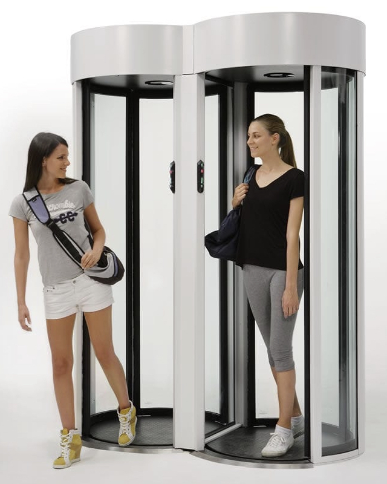
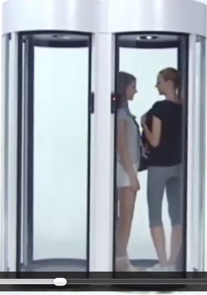

CR004 Matériels de contrôle d’accès¶
- Date
03-15-07h-20h
- Type
Réunion
- PartiesPrenantes
KWG, CMS, YBI, MPA, ZSH
- Lieu
Berlin-Bissis
- Organisateur
KWG
- Rapporteur
KWG
- Presents
KWG, CMS, YBI, MPA, ZSH
- Objectifs
Architecture et discussions sur les fonctionnalités gardien
Attention
Ce compte rendu est un document de travail et n’est pas contractuel.
- Nouvelles parties prenantes :
Clarissa Maris (CMS) - Bissis, Berlin
Yohav El Benali (YBI) - Bissis, Berlin
La réunion a eu lieu dans les locaux de Bissis.
Bissis est sur le point de commercialiser des sas de sécurité révolutionnaires.
Ces systèmes physiques seront prochainement commercialisés sous le nom de Bissas.
Bissis souhaite accélérer la mise sur le marché des bissas et souhaite donc intégrer le consortium pour participer à l’élaboration de iAccess.
Il est entendu que Bissis fournira ces Bissas et pour chaque modèle un driver logiciel pour l’intégrer à iAccess
Par contre un problème est vite apparu pendant la réunion.
Il sera impossible de voir les bissas avant au moins deux mois, et cela pour des problèmes de confidentialité.
Vu les très nombreuses innovations, de multiples brevets sont en court d’acquisition et ce procédé est long.
La direction ne souhaite prendre aucun risque de fuites et même en interne seuls certains employés (e.g. YBI) ont une vision globale des bissas tel qu’ils seront présentés dans quelques mois.
Après quelques échanges et discussions animées, il est apparu que ce ne devrait cependant pas être un problème pour iAccess.
Bissis fournira des simulateurs pour que puissent commencer les tests lorsque nécessaires.
Toutes les parties logicielles sur le serveur applicatif pourront être réalisées en amont grâce à la simulation des bissas et des caméras pilotées par les drivers à installer sur le serveur de contrôle.
AccessIT, qui travaille depuis longtemps avec Bissis, est confiant dans cette démarche.
L’utilisation d’une spécification UML a été soulignée comme un point essentiel dans ce contexte tendu.
Il a été convenu que l’IM2AG fournirait rapidement des scénarios qui serviront à écrire les tests de la version pour le stade de Tokyo.
Il s’agit non seulement de tester les scénarios de passage sans incident, mais aussi les scénarios générant des alarmes envoyées aux gardiens.
En ce qui concerne les fonctionnalités des bissas, Bissis a proposé une illustration via l’étude d’un système proposé par un de ses concurrents.
Les bissas ressembleront par certains côtés au système « Cilindro Bibussola » de AllUserIndustrie:
Fig. 1 : « CILINDRO BIBUSSOLA » par AllUserIndustrie (cf
VideoBibussola)¶Le Bibussola n’est là qu’à titre d’illustration ; les bissas ont de nombreuses différences.
Des groupes de 2 à 16 bissas peuvent être alignés par point d’accès.
Le matériel est extrêmement performant (à condition que les contrôles logiciels suivent).
Ceci permet des flux importants à un même point d’accès (jusqu’à 100 passages/mn).
Les bissas sont symétriques
Ils possèdent systématiquement des lecteurs sur les deux faces (contrairement aux Bibussolas).
Ils peuvent ainsi contrôler à la fois l’entrée et la sortie.
Ce qui permet à tout moment être capable de savoir qui est dans une zone.
Cette fonction est nécessaire entre autres pour ne pas dépasser le nombre maximum de personnes autorisées par zone.
Si une zone est pleine, une alerte devra être générée pour qu’un affichage le signale et que les gardiens soient prévenus de venir expliquer la situation.
Les lecteurs des bissas sont polyvalents et permettent plusieurs types d’identification.
Ils lisent différents types de badges papier, par exemple des QR codes.
Ils peuvent lire également des cartes classiques ou sans contact (jusqu’à 1m).
Quel que soit le type de badge, les informations envoyées par le driver du bissas au serveur de contrôle sont toujours identiques.
La première information est le numéro du point d’accès dans le site.
La seconde information est le numéro du bissas dans ce point d’accès
La troisième information est la face sur laquelle le badge a été lu (A ou B).
La dernière information est le « bCode » (code badge) lu par le lecteur de badge.
Les lecteurs sont équipés de deux leds (une rouge et verte).
Deux détecteurs de chaque côté permettent au bissas de signaler lorsqu’une porte arrive en position ouverte ou en position fermée.
Tout comme le Cilindro Bibussola, les bissas possèdent un détecteur de présence à l’intérieur du sas.
- A chaque fois qu’une porte est refermée, il détecte l’absence ou la présence d’une personne et si du métal est présent en retournant Void, OK ou M.
- 
Fig. 2 : Incident de « piggybacking (cf
VideoBibussolaseconde 52)¶
En fait les bissas sont entièrement contrôlés par le driver fourni par Bissis.
Ces drivers seront installés sur le serveur de contrôle.
Chaque bissas sera connecté au panneau de brassage du serveur de contrôle par une connexion RFC 821
Bissis propose deux types de bissas, les bissas Astra et les bissas Xtra.
Les bissas Astra sont destinés à recevoir un public important.
C’est pour cela que AccessIT préconise leur utilisation au stade de Tokyo.
Les bisas Xtra sont écartés car leur débit est insuffisant.
Les bissas Astra permettent entre autres d’organiser des files d’attentes uniques par point d’accès.
Ils sont munis d’un feu visible depuis la file indiquant l’état du bissas (disponible = vert, rouge = utilisé, orange = bientôt libre).
Ce feu tricolore permet de montrer le prochain bissas Astra disponible (voyant orange).
Pour cela, un détecteur de présence à l’intérieur fait passer le feu à l’orange lorsqu’un badgeur est entré dans le bissas et que la seconde porte s’ouvre.
En fait, contrairement aux autres fonctionnalités, le contrôle des feux tricolores est intégré au bissas ASTRA et ne doit pas être commandés par le driver de Bissas depuis le serveur de contrôle.
Pour le stade de Tokyo, on souhaite aussi détecter le piggypacking, c’est à dire quand plus d’une personne entre dans le bissas.
Dans ce cas, la porte sera refermée et une alarme envoyée aux gardiens qui devront intervenir pour débloquer le bissas.
AccessIT insiste de nouveau sur le fait que différents scénarios devront donner lieu à des incidents envoyés aux gardiens.
C’est le cas par exemple si un badgeur ne sort pas du sas au bout de 8 secondes.
C’est également le cas si quelqu’un bloque une porte (avec un pied ou autre).
Bissis propose aussi des bissas haute sécurité, les bissas Xtra.
Ces bissas sont préconisés par AccessIT pour l’usine de Morrocoy.
Ils permettent d’être sûr (à 98%) que le badgeur est bien la personne associée au badge.
La personne ne peut en effet sortir du sas qu’après avoir effectué une identification physique.
Cette identification physique se fait à l’intérieur du sas, après l’identification badge à l’entrée.
L’identification physique est une empreinte digitale
Si la personne n’est pas autorisée un incident système sera généré par le bissas Xtra.
Il en sera de même si le détecteur de métaux intégré dans les Xtra se déclenche.
Le badgeur sera alors bloqué dans le sas et devra attendre qu’un gardien vienne le débloquer.
Une fois de plus Bissis propose le matériel pour permettre cela, mais les fonctions devront être réalisées sur le serveur de contrôle en fonction des informations émises par les bissas.
Evidemment les digitCodes transmis par le lecteur d’empreinte digitale devront être comparés aux données disponibles sur le serveur applicatif.
Dans iAccess ce sont les administrateurs de groupes qui seront chargés, en plus de la délivrance des badges selon la procédure normale, de collecter les empreintes digitales des badgeurs.
L’identification physique des badgeurs dans un Xtra devra se faire en moins de 5 secondes.
L’identification des badges et surtout le calcul des autorisations lors d’un passage de badge devra toujours pouvoir être faite en moins de 2 secondes.
Sachant que l’on envisage plus de 200 entrées ou sorties simultanément un soin tout particulier devra être apporté à cet aspect.
Bissis propose également d’autres éléments matériels pour la sécurité.
Des caméras directionnelles C800 pourront être installées comme option d’iAccess.
Les gardiens devront pouvoir à tout moment les réorienter à distance.
Les plans de sécurité proposés par AccessIT pour Morrocoy et Tokyo sont déjà basés sur l’utilisation de ce matériel.
Cependant pour des raisons de délai, les caméras ne seront pas connectées à iAccess pour la première version du logiciel
Les bissas doivent être reliés au serveur de contrôle du site via des liaisons « RFC 321 »; les caméras via des liaisons « RFC 821 ».
Le matériel et les protocoles associés sont en cours d’être brevetés par Bissis.
Il doit y avoir une salle de contrôle par site ; elle contient le serveur de contrôle.
Il s’agit d’un matériel spécialisé quasi temps réel auquel de multiples câbles sont connectés sur un panneau de brassage (jusqu’à des centaines sur certains sites).
Ce serveur de contrôle devra être connecté au serveur applicatif via une liaison TCP/IP sécurisée.
Seuls les gardiens doivent avoir accès à la salle de contrôle.
En conclusion de cette réunion (longue), il apparaît clairement que les technologies innovantes proposées par Bissis en font un partenaire idéal.
De plus, le matériel n’étant pas disponible à ce jour, il est essentiel de préparer les scénarios à prendre en compte et de les spécifier de manière rigoureuse.
Bissis fournira des simulateurs matériels pilotables par le driver fourni.
Dans un premier temps des tests seront ainsi effectués à partir des scénarios fournis par IM2AG.
Une réunion est prévue (03-18) pour discuter des points non abordés jusque-là et notamment de l’architecture de déploiement.